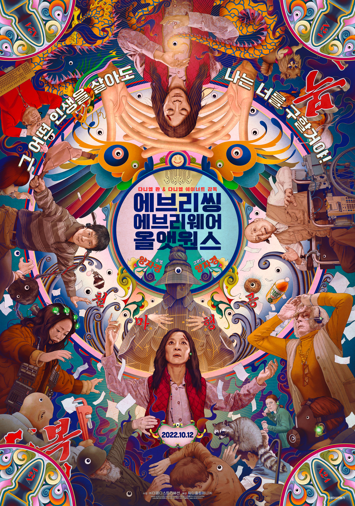

자기소개
- 이름 : 후추(주찬민)
- 사는 곳 : 성남시 수정구
- 안녕하세요 저는 후추입니다.
- 만나서 반갑습니다. 반갑습니다. 반가워요.
- 이름 : 후추(주찬민)
- 사는 곳 : 성남시 수정구
- 안녕하세요 저는 후추입니다.
- 만나서 반갑습니다. 반갑습니다. 반가워요.
| 목록 | 제목 | 포스터 | 줄거리 | 바로가기 |
|---|---|---|---|---|
| 1 | 에브리씽 에브리웨어 올 앳 원스 |  |
미국에 이민 와 힘겹게 세탁소를 운영하던 에블린은 세무당국의 조사에 시달리던 어느 날 남편의 이혼 요구와 삐딱하게 구는 딸로 인해 대혼란에 빠진다. 그 순간 에블린은 멀티버스 안에서 수천, 수만의 자신이 세상을 살아가고 있다는 사실을 알게 되고, 그 모든 능력을 빌려와 위기의 세상과 가족을 구해야 하는 운명에 처한다. |
에브리띵 에브리웨어 올 앤 원스 보러가기 |
| 2 | 이터널 선샤인 |

|
사랑은 그렇게 다시 기억된다.. 조엘은 아픈 기억만을 지워준다는 라쿠나사를 찾아가 헤어진 연인 클레멘타인의 기억을 지우기로 결심한다. 기억이 사라져 갈수록 조엘은 사랑이 시작되던 순간, 행복한 기억들, 가슴 속에 각인된 추억들을 지우기 싫어지기만 하는데... 당신을 지우면 이 아픔도 사라질까요? 사랑은 그렇게 다시 기억된다. |
이터널 선샤인 보러가기 |
| 3 | 동주 |

|
이름도, 언어도, 꿈도, 모든 것이 허락되지 않았던 일제강점기. 한 집에서 태어나고 자란 동갑내기 사촌지간 동주와 몽규. 시인을 꿈꾸는 청년 동주에게 신념을 위해 거침없이 행동하는 청년 몽규는 가장 가까운 벗이면서도, 넘기 힘든 산처럼 느껴진다. 창씨개명을 강요하는 혼란스러운 나라를 떠나 일본 유학 길에 오른 두 사람. 일본으로 건너간 뒤 몽규는 더욱 독립 운동에 매진하게 되고, 절망적인 순간에도 시를 쓰며 시대의 비극을 아파하던 동주와의 갈등은 점점 깊어진다. 어둠의 시대, 평생을 함께 한 친구이자 영원한 라이벌이었던 윤동주와 송몽규의 끝나지 않은 이야기가 지금 시작된다. |
동주 보러가기 |
| 4 | 곡성 |

|
낯선 외지인(쿠니무라 준)이 나타난 후 벌어지는 의문의 연쇄 사건들로 마을이 발칵 뒤집힌다. 경찰은 집단 야생 버섯 중독으로 잠정적 결론을 내리지만 모든 사건의 원인이 그 외지인 때문이라는 소문과 의심이 걷잡을 수 없이 퍼져 나간다. 경찰 ‘종구’(곽도원)는 현장을 목격했다는 여인 ‘무명’(천우희)을 만나면서 외지인에 대한 소문을 확신하기 시작한다. 딸 ‘효진’(김환희)이 피해자들과 비슷한 증상으로 아파오기 시작하자 다급해진 ‘종구’. 외지인을 찾아 난동을 부리고, 무속인 ‘일광’(황정민)을 불러들이는데... |
곡성 보러가기 |
| 5 | 어바웃타임 |

|
모태솔로 팀(돔놀 글리슨)은 성인이 된 날, 아버지(빌 나이)로부터 놀랄만한 가문의 비밀을 듣게 된다. 바로 시간을 되돌릴 수 있는 능력이 있다는 것! 그것이 비록 히틀러를 죽이거나 여신과 뜨거운 사랑을 할 수는 없지만, 여자친구는 만들어 줄 순 있으리.. 꿈을 위해 런던으로 간 팀은 우연히 만난 사랑스러운 여인 메리에게 첫눈에 반하게 된다. 그녀의 사랑을 얻기 위해 자신의 특별한 능력을 마음껏 발휘하는 팀. 어설픈 대시, 어색한 웃음은 리와인드! 뜨거웠던 밤은 더욱 뜨겁게 리플레이! 꿈에 그리던 그녀와 매일매일 최고의 순간을 보낸다. 하지만 그와 그녀의 사랑이 완벽해질수록 팀을 둘러싼 주변 상황들은 미묘하게 엇갈리고, 예상치 못한 사건들이 여기저기 나타나기 시작하는데… 어떠한 순간을 다시 살게 된다면, 과연 완벽한 사랑을 이룰 수 있을까? |
어바웃타임 보러가기 |